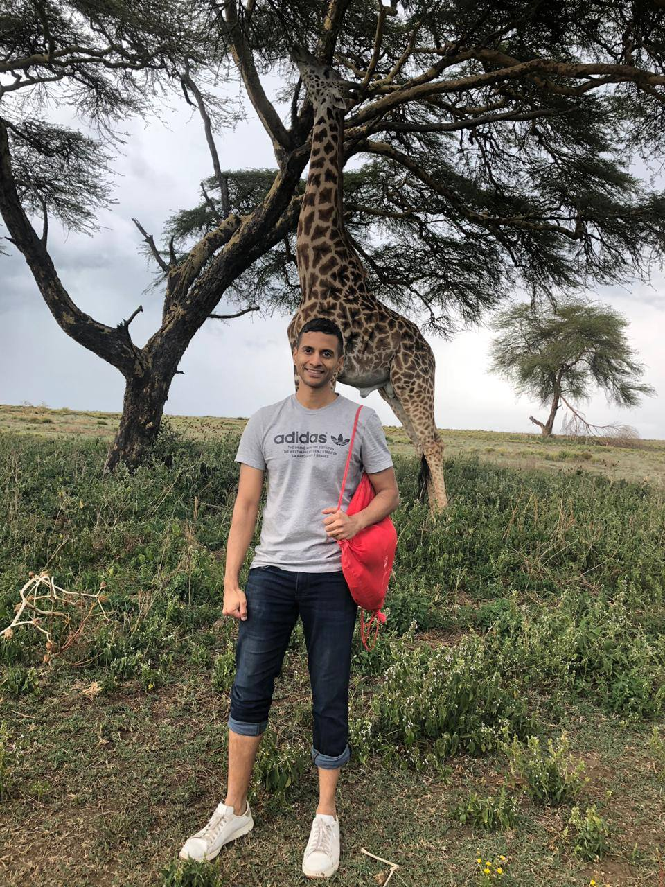
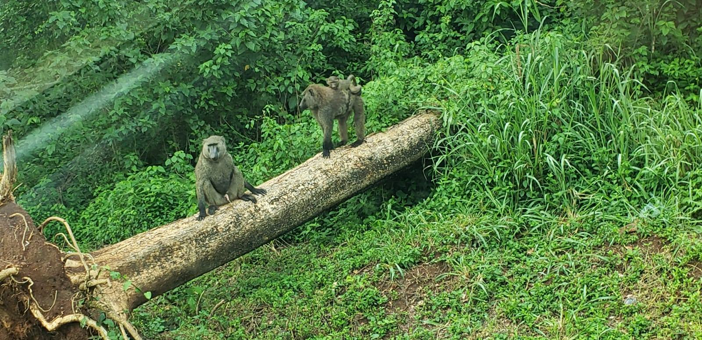
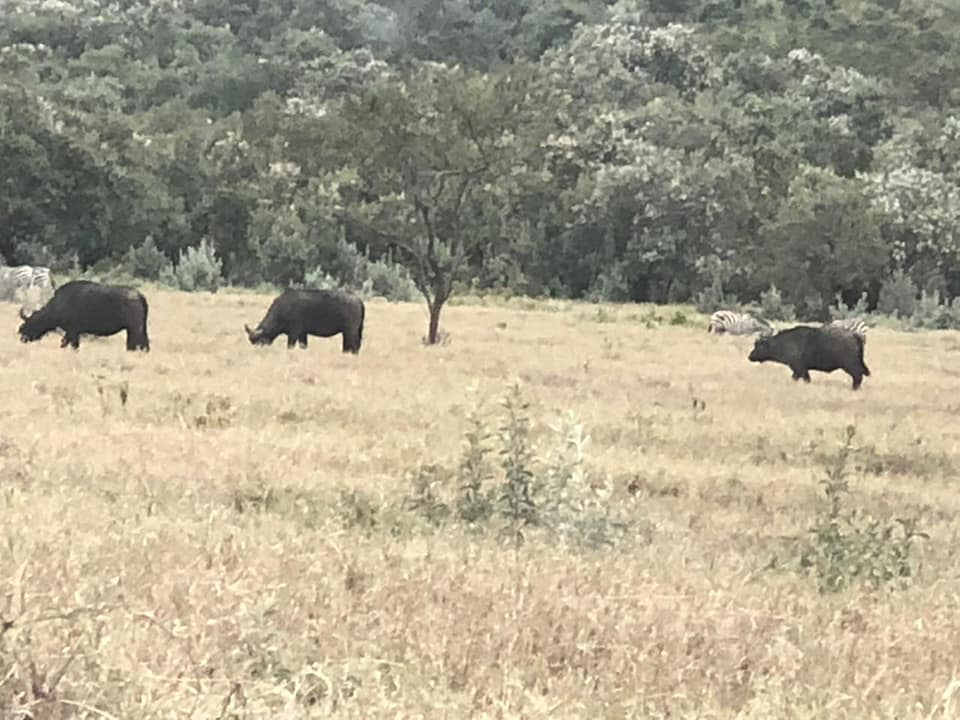
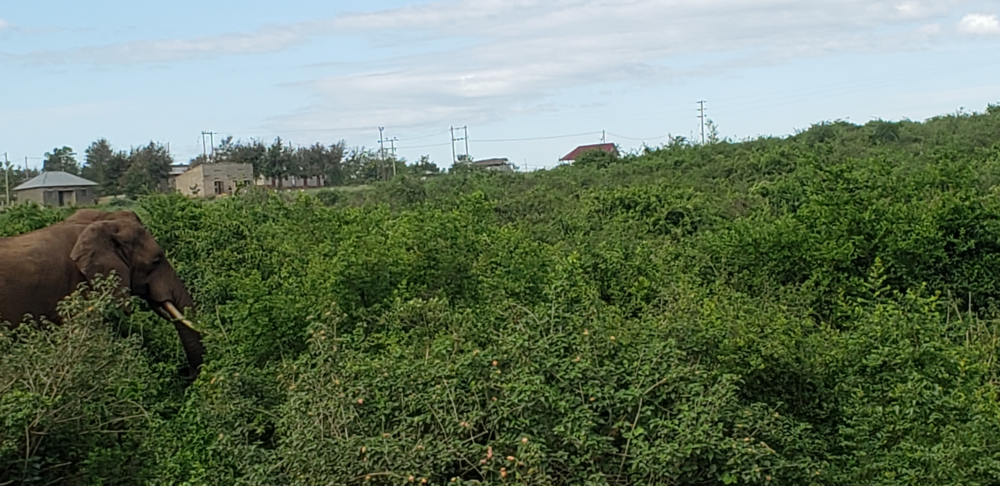

Blog
Here below, you will find pictures I have taken from my trips, as well as a short discription

Kenya Safari Adventure
This is a picture of a giraffe left by a film crew in Kenya. This giraffe was very tall and used it height to eat the leaves from taller trees. An intersting fact about the island in which the animals reside is that they overpopulated due to a lack of natural predators.

Uganda's Baboon Sighting
Baboons are known to be quite vicious. They often feed on wildlife such as new-born impala or other smaller animals. The ones captured below are mostly vegetarian due to habitat.
This picture of wild baboons weas captured in Uganda. Normally, wild baboons are known to be carnivores; however, here they are known to eat vegetation and are occasionally fed by the local residents.

One of Kenya's Deadliest
African buffalo are very deadly when sensing danger. The horns on their head serve as a deterrant to predatory attacks, and have known to injure or even kill local villagers
In this picture, taken in Nairobi, you will see buffalo in the background. I was cautioned to keep my distance, as they can be very dangerous when approached too closely. Interestingly, a local villager there shared the tragic story of a young woman's death: one day, as she left her village to gather vegetation from the nearby fields, she heard a strange noise. Thinking nothing of it, she continued, when suddenly she turned around an was gored to death by the horns of a protective female buffalo. She was rushed to the hospital, but tragically lost her life en route.

Random Bull Elephant Encounter
Elephants may seem like gentle giants; however, they are extremely territorial and will become agressive when they perceive any threats. Some residents on bicycles have lost their lives while riding along trails returning home from work.
This image was taken of a bull elephant crossing a rural country side in Zambia. The bull elephant was leading its heard to eat vegetation in the grass fields. Our driver cautioned us to remain calm and distant from the animals, as any degree of sound or commotion would provoke the animals to attack, as they particularly do not like humans due to a history of poaching for ivory.